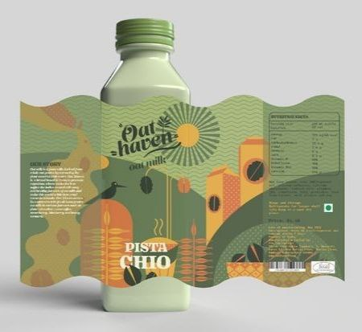

- ➤ Графічний дизайнер може працювати ,як і на себе, приймаючи замовлення,так і в офісі на якусь компанію.В його роботу входить дуже багато обов'язків ,насамперед створення дизайну для всього що навколо нас:
- •Візитки
- •Пляшки
- •Чохли для телефона
- •Ручки
- •Стікери
- ➤ Деякі продукти можуть бути об'єднані одним стилем та дизайном,зазвичай так роблять на замовлення компаній.



- ➤Професія графічного дизайнера дозволяє робити тобі дизайн упаковки і етикетки наприклад:
- •Упаковка молока,йогурта тощо
- •Дизайн упаковки для морозива
- •Етикетка для склянок
- ➤Дизайн календаря,банера і тп. це також робота графічного дизайнера
- ➤ Ілюстрація книг,обкладинка для них,журнали,зошити,блокнота тощо
- ➤ В деяких випадках вони займаються веб дизайном
- ➤Отож все ,що оточує нас це все робота графічного дизайнера.